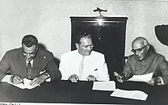
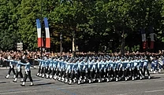
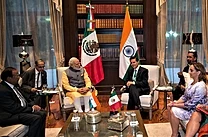

Foreign, economic and strategic relations
In the 1950s, India strongly supported decolonisation in Africa and Asia and played a leading role in the Non-Aligned Movement. After initially cordial relations with neighbouring China, India went to war with China in 1962, and was widely thought to have been humiliated. India has had tense relations with neighbouring Pakistan; the two nations have gone to war four times: in 1947, 1965, 1971, and 1999. Three of these wars were fought over the disputed territory of Kashmir, while the fourth, the 1971 war, followed from India's support for the independence of Bangladesh. In the late 1980s, the Indian military twice intervened abroad at the invitation of the host country: a peace-keeping operation in Sri Lanka between 1987 and 1990; and an armed intervention to prevent a 1988 coup d'état attempt in the Maldives. After the 1965 war with Pakistan, India began to pursue close military and economic ties with the Soviet Union; by the late 1960s, the Soviet Union was its larges arms supplier.

Aside from ongoing its special relationship with Russia, India has wide-ranging defence relations with Israel and France. In recent years, it has played key roles in the South Asian Association for Regional Cooperation and the World Trade Organization. The nation has provided 100,000 military and police personnel to serve in 35 UN peacekeeping operations across four continents. It participates in the East Asia Summit, the G8+5, and other multilateral forums. India has close economic ties with countries in South America, Asia, and Africa; it pursues a "Look East" policy that seeks to strengthen partnerships with the ASEAN nations, Japan, and South Korea that revolve around many issues, but especially those involving economic investment and regional security.
China's nuclear test of 1964, as well as its repeated threats to intervene in support of Pakistan in the 1965 war, convinced India to develop nuclear weapons. India conducted its first nuclear weapons test in 1974 and carried out additional underground testing in 1998. Despite criticism and military sanctions, India has signed neither the Comprehensive Nuclear-Test-Ban Treaty nor the Nuclear Non-Proliferation Treaty, considering both to be flawed and discriminatory. India maintains a "no first use" nuclear policy and is developing a nuclear triad capability as a part of its "Minimum Credible Deterrence" doctrine. It is developing a ballistic missile defence shield and, a fifth-generation fighter jet. Other indigenous military projects involve the design and implementation of Vikrant-class aircraft carriers and Arihant-class nuclear submarines.

Since the end of the Cold War, India has increased its economic, strategic, and military co-operation with the United States and the European Union. In 2008, a civilian nuclear agreement was signed between India and the United States. Although India possessed nuclear weapons at the time and was not a party to the Nuclear Non-Proliferation Treaty, it received waivers from the International Atomic Energy Agency and the Nuclear Suppliers Group, ending earlier restrictions on India's nuclear technology and commerce. As a consequence, India became the sixth de facto nuclear weapons state. India subsequently signed co-operation agreements involving civilian nuclear energy with Russia, France, the United Kingdom, and Canada.

The President of India is the supreme commander of the nation's armed forces; with 1.45 million active troops, they compose the world's second-largest military. It comprises the Indian Army, the Indian Navy, the Indian Air Force, and the Indian Coast Guard. The official Indian defence budget for 2011 was US$36.03 billion, or 1.83% of GDP. For the fiscal year spanning 2012–2013, US$40.44 billion was budgeted. According to a 2008 Stockholm International Peace Research Institute (SIPRI) report, India's annual military expenditure in terms of purchasing power stood at US$72.7 billion. In 2011, the annual defence budget increased by 11.6%, although this does not include funds that reach the military through other branches of government. As of 2012, India is the world's largest arms importer; between 2007 and 2011, it accounted for 10% of funds spent on international arms purchases. Much of the military expenditure was focused on defence against Pakistan and countering growing Chinese influence in the Indian Ocean. In May 2017, the Indian Space Research Organisation launched the South Asia Satellite, a gift from India to its neighbouring SAARC countries. In October 2018, India signed a US$5.43 billion (over ₹400 billion) agreement with Russia to procure four S-400 Triumf surface-to-air missile defence systems, Russia's most advanced long-range missile defence system.
For previous page
click here